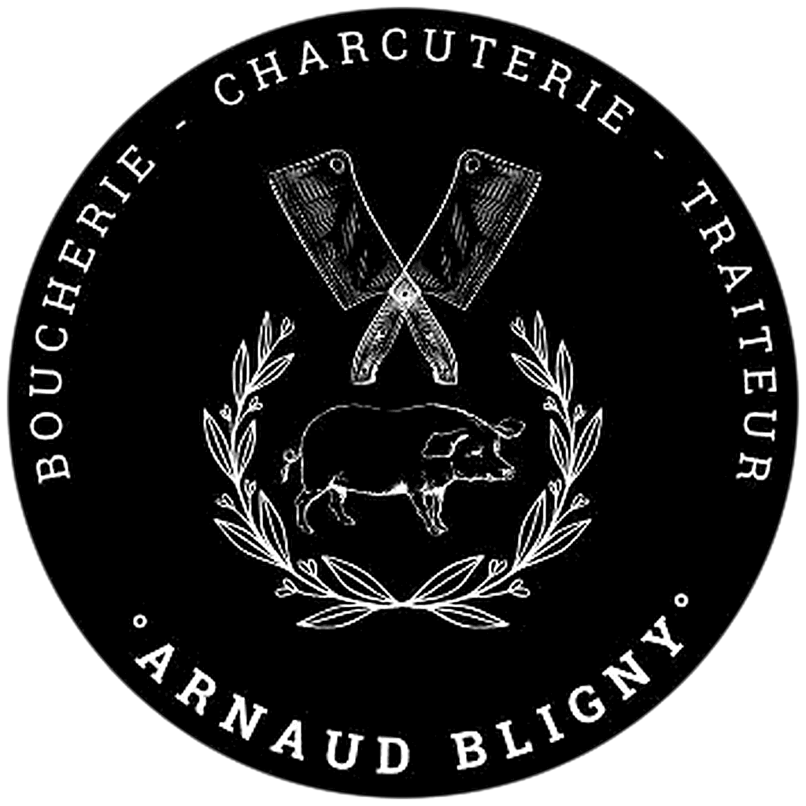
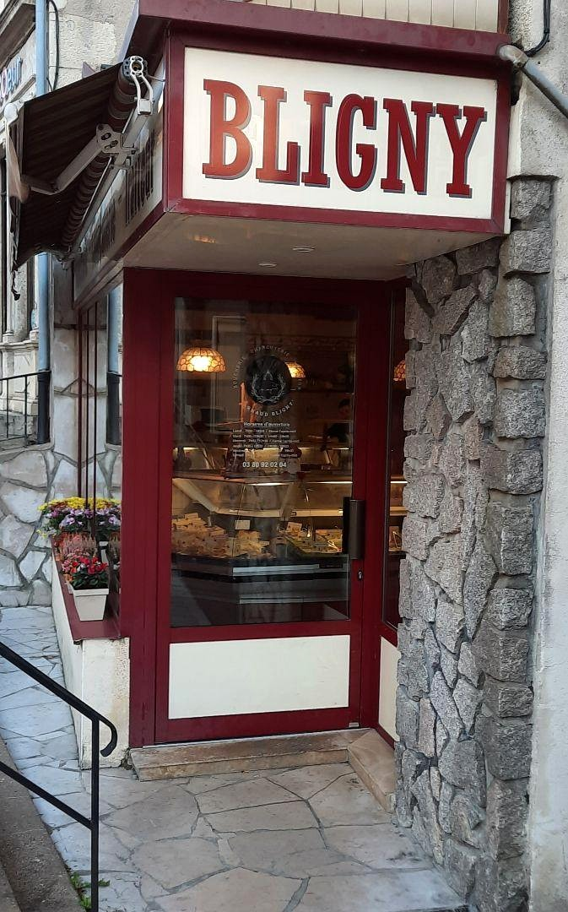
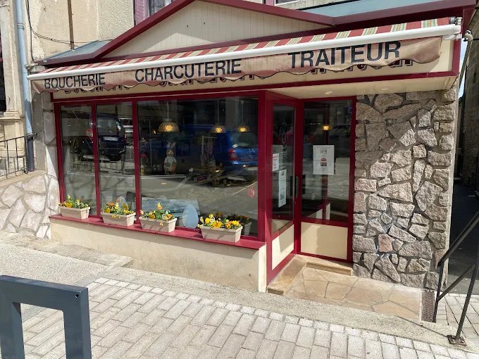
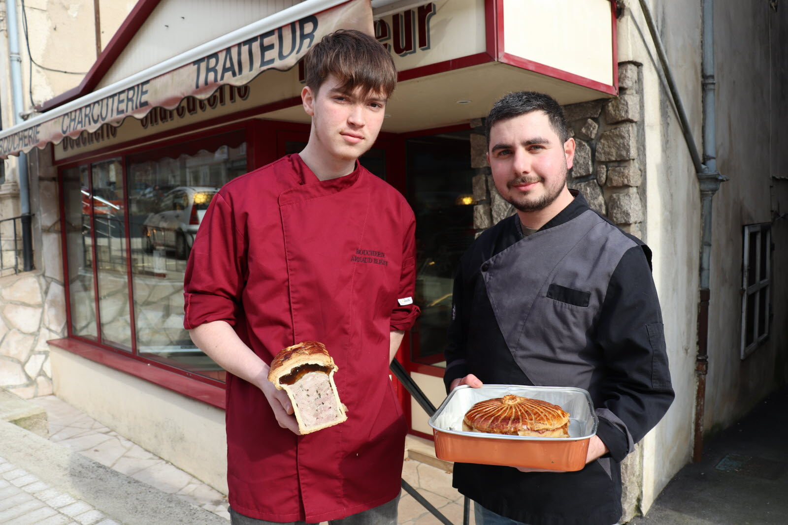
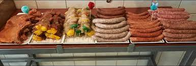
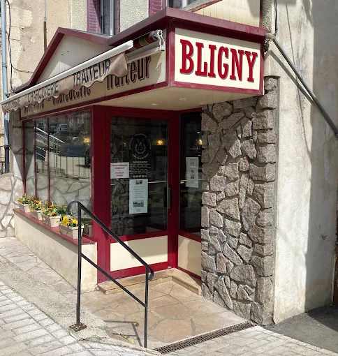

Dans la presse
Le Bien Public · 22 février 2025« Hugo va représenter la Bourgogne »
Aux côtés d’Arnaud Bligny, son maître d’apprentissage, Hugo Maignier se prépare au concours des Meilleurs Apprentis de France.
Lire l’article sur Le Bien Public ↗
Arnaud BlignyBoucherie - Charcuterie - Traiteur
Artisan boucher à Montbard
Boucherie, charcuterie et préparations traiteur au cœur de Montbard.
La boucherie
À deux pas du centre de Montbard, Arnaud Bligny vous accueille dans sa boucherie-charcuterie-traiteur. Une boutique de quartier où le métier, la préparation et le conseil sont au centre de chaque visite.
Découvrir nos produits →

Dans la presse
Le Bien Public · 22 février 2025Aux côtés d’Arnaud Bligny, son maître d’apprentissage, Hugo Maignier se prépare au concours des Meilleurs Apprentis de France.
Lire l’article sur Le Bien Public ↗À votre table
Des produits de boucherie et de charcuterie, ainsi que des préparations traiteur pour vos repas du quotidien.
Des pièces sélectionnées et préparées en boutique, avec les conseils de votre artisan.
Saucisses, spécialités et préparations gourmandes à retrouver au comptoir.
Des préparations généreuses pour accompagner vos repas et vos envies.

Préparez votre visite

Nous trouver sur la carte ↗